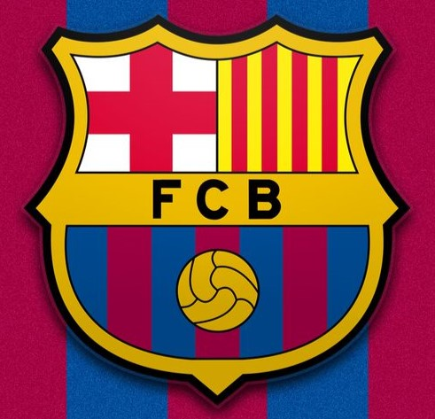

La aventura de la creación del FC Barcelona en 1899 por un grupo de jóvenes, extranjeros y catalanes que vivían en Barcelona, fue la consecuencia de un proceso de expansión de la práctica del fútbol y otros deportes de origen británico en el continente europeo. Esto explica la naturaleza intercultural del Club, su vocación polideportiva y la voluntad de arraigo en una ciudad y en un país. Gamper, fundador del Club, fue el alma y el impulsor durante los primeros 25 años. Su compromiso con el FC Barcelona va más allá de sus facetas como jugador, directivo y presidente.
HISTORIA

FUNFACION DEL CLUB
Hans Gamper (Winterthur, Suiza, 1877 - Barcelona, 1930) llegó a Barcelona en 1898 por motivos profesionales. En los ratos de ocio jugaba al fútbol con un grupo de compañeros en las calles de la capital catalana. El 22 de octubre de 1899 Gamper publica un anuncio en la revista Los Deportes haciendo un llamamiento para formar un equipo de fútbol. El 29 de noviembre, Gamper y once hombres más (los suizos Otto Kunzle y Walter Wild, los ingleses John y William Parsons, el alemán Otto Maier y los catalanes Lluís d'Ossó, Bartomeu Terrades, Enrique Ducay, Pere Cabot, Carles Pujol y Josep Llobet) se reúnen en el Gimnàs Solé para formar una asociación que llevará el nombre y el escudo de la ciudad: el FC Barcelona.
GAMPER Y LOS VALORES PRIMIGENIOS DEL BARÇA
Gamper, enamorado del deporte -además de fútbol,era practicante de atletismo, ciclismo, rugby y golf, lo concebía como un factor determinante para ensalzar las virtudes del ser humano. Deseó una entidad abierta a todos, sin tener en cuenta la procedencia de las personas. Se imaginó un club integrador en el que todo el mundo pudiera decir la suya, y apostó por una sociedad democrática, regida libremente por sus asociados. Y, agradecido con el país que lo había acogido, Catalunya, no dudó, a partir del año 1908, a dar al FC Barcelona un sentido que lo marcará universalmente: el compromiso con la catalanidad. Catalanidad, democracia, polideportividad, universalidad. Es a partir de las premisas de Gamper que hoy todo tiene un sentido cuando hablamos del Barça.
EL PRIMER ESCUDO
El FC Barcelona utilizó el mismo escudo que Barcelona en una muestra de la voluntad que tenía de identificarse con la ciudad que le acogía y de fundirse. En 1910 la Junta Directiva, que quería que el Club dispusiera de un símbolo propio, convoca un concurso para cambiar el distintivo de la Entidad, y se adopta el formato que con más o menos variaciones ha llegado hasta nuestros días.
LA PRIMERA EQUIPACIÓN
En aquellos primeros momentos media camiseta era azul y la otra media, grana, con las mangas del color inverso y los pantalones blancos. La teoría más probable indica que los colores azul y grana provienen de la indumentaria del equipo de rugby de la escuela inglesa Merchant Taylors', donde los hermanos Witty, unos de los primeros socios del Club, habían estudiado en su primera juventud
LOS PRIMEROS CAMPOS
En menos de diez años, entre 1899 y 1908, el FC Barcelona utilizó cuatro terrenos de juego diferentes como campo propio, debido a la inestabilidad económica y la dificultad para encontrar espacios al aire libre de grandes dimensiones en plena expansión urbanística de la ciudad. 1899-1900 Campo del antiguo velódromo de la Bonanova (junto a la actual Turó Parc) 1900-1901 Campo del hotel Casanovas (hoy, Hospital de Sant Pau) 1901-1905 Campo de la carretera de Horta 1905-1909 Campo de la calle de Muntaner
EL PRIMER TÍTULO
En 1902 el FC Barcelona gana la Copa Macaya, embrión del Campeonato de Catalunya. Nació gracias a la voluntad de Alfonso Macaya, presidente del Club Hispania, que en 1900 hizo pública su intención de organizar una competición entre equipos catalanes. El trofeo es una excepcional obra de arte modernista, pero desgraciadamente la Copa Macaya desapareció un año después con la creación del Campeonato de Catalunya.